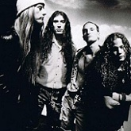

{kind=link}
Ya estamos en 2013 y como no podía ser de otro modo estamos con los ojos puestos en lo que nos deparará este año. Por ello hemos hecho una selección de grupos, que con mayor o menor seguridad sacarán disco en los próximos doce meses, y que por alguna razón u otra creemos que darán que hablar. Tenemos desde apuestas propias como Fall City Fall, monstruos de leyenda como Black Sabbath, artistas hypeados como Arcade Fire, y supergrupos como Atoms For Peace. Vayamos por partes…
Predicciones en rock alternativo 2013:
Mad Season
Parece mentira, pero la noticia de que Mad Season editarán en marzo de este año un Box Set con Above remasterizado, un DVD de su directo en The Moore River of Deceit, una remezcla de una versión de John Lennon (I Don’t Wanna Be A Soldier), un tema inédito (Interlude) y 3 canciones inéditas que iban a aparecer en su nonato segundo disco, cantadas por Mark Lanegan, nos ha dejado bastante fríos; y es que los planes del guitarrista Mike McCready (Pearl Jam) y Barrett Martins (Screaming Trees) no fueron inicialmente esos. Nos regalaron los oídos con que iban a buscar vocalistas para lo que creían iban a ser 8 temas. Sin la irremplazable sustitución de Layne Staley (Alice In Chains) estaba claro que solo Mark Lanegan podría ocupar un puesto legítimo, pero aún así estos tres temas nuevos nos saben a priori a muy poco. (remem0rama)
Alice In Chains

Cuando en 2009 yo todavía decía “sin Layne Staley” esto no es Alice In Chains vino Black Gives Ways To Blue a darme una bofetada de las buenas, por lo que las expectativas para su siguiente disco son buenas, y así lo presagia el Hollow, primer adelanto promocionado con un video realizado al 100% con imágenes de Instagram. Muy raro tendría que ser para que los hipsters se pusieran a reclamar un grupo de la solera de Alice In Chains… Oh wait! (remeorama)
Red Fang
Quizás sean feos y barbudos, quizás abusen de la ingesta de cerveza y sean unos garrulos, pero probablemente son el grupo de Stoner que más lo ha petado desde que sacaron en 2009 su contundente disco debut. No por nada han sido teloneros de Mastodon en su última gira junto con The Dillinger Escape Plan, se dice pronto… Va ser dificil superar su genial Murder the Mountains pero estamos seguros de que como poco nos ofrecerán una nueva dosis de videoclips cachondos llenos de publicidad de cerveza y unos cuentos temazos para hacer el cafre. (S—-G)
Nick Cave & The Bad Seeds
“Si usara una metáfora de niños para hablar de discos, entonces Push The Sky Away sería el bebé fantasma en la incubadora y los loops de Warren sus diminutos y temblorosos latidos”. Así describe Nick Cave Push The Sky Away. Han pasado cuatro años desde el Dig, Lazarus, Dig!!!, lapso en el que aun así grabó dos discos con Grinderman, proyecto que formó y disolvió en este descanso que se han dado los Seeds. Aunque los últimos tres trabajos que ha grabado el señor Cave son muy enérgicos y exploran su faceta mas ruidosa, rockera y esquizofrénica, el nuevo disco ha sido anunciado como un disco muy bonito y que usará instrumentos tracionales. Echando un ojo a la discografía de este monstruo, las expectativas con los Seeds solo pueden ser altísimas. (S—-G)
Queens of the Stone Age
La que para muchos es la mejor banda de rock de los últimos 15 años lanzó su último álbum en el año 2007. Era Vulgaris fue un buen disco, pero decepcionó a la gran mayoría de seguidores del grupo. Con el anuncio de este nuevo trabajo la esperada redención por fin parece cercana. No se sabe mucho del disco más que unos comentarios de Josh Homme en los que dice que el disco tendrá toques Blues o sus recientes declaraciones en las que afirma que el disco «suena como correr en un sueño». Por si el hype no fuese enorme de por sí, la vuelta al grupo de Dave Grohl o las ya anunciadas colaboraciones del ex-QOTSA Nick Olivieri o Trent Reznor ponen lasexpectativas por las nubes. (S—-G)
Triángulo de Amor Bizarro
No creo que veamos el salto que dieron de su homónimo al Año Santo, pero tampoco lo necesitan. Su último disco me lo sigo poniendo regularmente (que se lo pregunten a mis compis de coche para ir al curro), y de este espero incluso un poquito más. Los temas que vienen presentando en directo son la hostia, y el single que han grabado con Sonic Boom es la bomba (JIEJIE). De sorprender, lo harán para bien. (Tharandur)
Biffy Clyro
Los incios de Biffy Clyro son la caña. El Puzzle fue su gran obra maestra. Only Revolutions decepcionó a algunos (me incluyo en ese grupo). Y ahora la banda nos promete nada más y menos que un disco doble, cementerio de elefantes para muchos grupos. En el mejor de los casos será el típico disco que “si le quitases la mitad de los temas estaría bien”. En el peor, será la decepción de año. Yo no esperaría demasiado, a pesar de que los adelantos no están mal. (Tharandur)
Long Distance Calling
Todo lo grabado hasta el momento por estos alemanes me ha maravillado. Encontrando su obra cumbre en Avoid The Light y habiendo bajado un poco le pistón con el homónimo, ¿Qué nos deparará el nuevo disco? Para empezar, han contratado los servicios de un cantante para la mayor parte de las canciones. Esto no debería suponer mucha sorpresa, pues no es la primera vez que cuentan con vocalistas para sus grabaciones, aunque no con tanta presencia como vaticinan. Esto me genera sensaciones contrarias, pues en Avoid The Light compusieron un genial tema con Jonas Renkse a las voces, pero en el disco posterior, la colaboración de John Bush no terminó de convencerme demasiado. Preveo un cambio de sonido bastante fuerte, quizás a terrenos menos metaleros —como podemos ya percibir en el primer adelanto del disco, Ductus— lo cual me parecería un gran error. Esperemos encontrar algún bombazo dentro de este próximo disco al estilo Black Paper Planes, de lo contrario, creo que el grupo se alejaría bastante de lo que sus seguidores esperan de ellos. (Mcore)
Apoyános